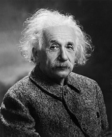

Einstein
Albert Einstein, né le 14 mars 1879 à Ulm, dans le Wurtemberg, et mort le 18 avril 1955 à Princeton, dans le New Jersey, est un physicien théoricien. Il fut successivement allemand, apatride, suisse et de double nationalité helvético-américaine.
.jpg)
.jpg)
.jpg)
.jpg)
Biographie
Son père, Hermann Einstein, né le 30 août 1847 à Buchau, est mort le 10 octobre 1902 à Milan. Il est entrepreneur (Elektrotechnische Fabrik J. Einstein & Cie) et épouse Pauline Koch (1858-1920) le 8 août 1876. Trois ans plus tard, le 14 mars 1879, Albert Einstein, leur premier enfant, naît dans leur appartement à Ulm en Allemagne.
Les Einstein sont des juifs non pratiquants, mais un parent enseigne à Albert les éléments du judaïsme. Il a vers onze ans une phase très religieuse : il ne mange pas de porc et compose des chants religieux qu'il chante sur le chemin de l'école. « Mais je lus mes premiers livres de science, et j'en terminais avec la foi d'Abraham. »2 Il ne fait pas son bar-mitzvah et n'apprend pas l'hébreu.
L'intérêt d'Albert pour la science est éveillé par une boussole alors qu'il est âgé de cinq ans : l'existence d'une action à distance lui paraît « miraculeuse » et l'étonne très vivement. À douze ans, un petit livre sur la géométrie euclidienne du plan 3, qu'il nommera plus tard le « livre sacré de la géométrie », le marque fortement (« la clarté et la certitude des démonstrations eurent sur moi un effet indescriptible »). Son oncle Jakob, ingénieur associé dans l'entreprise de matériel électrique de son père, lui pose des problèmes mathématiques. Max Talmey, un étudiant en médecine qui dîne souvent chez les Einstein, lui offre des livres de science et plus tard des œuvres de Kant, et ils ont souvent de longues discussions.